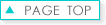
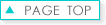
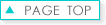

ドリームタウンALi
近年急成長した浜田地区に、2007年9月28日より順次オープンした複合型ショッピングセンターです。
青森県、青森市で初進出となる店舗が多く浜田地区を賑わせています。
観光通り
飲食店やカラオケ、スーパーなど様々な施設が並ぶ通りです。
休日になると県外からも買い物客が訪れ、大変賑わっています。
 


近年急成長した浜田地区に、2007年9月28日より順次オープンした複合型ショッピングセンターです。
青森県、青森市で初進出となる店舗が多く浜田地区を賑わせています。
飲食店やカラオケ、スーパーなど様々な施設が並ぶ通りです。
休日になると県外からも買い物客が訪れ、大変賑わっています。
